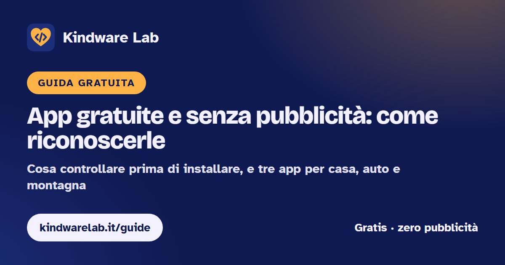

3 guide gratuite
Guide utili per le cose di tutti i giorni
Consigli pratici per organizzare spesa, auto e tempo libero, e per scegliere app che ti aiutano davvero. In fondo trovi anche le guide di SpesaFox, SpeseAuto e Gippix.


App gratuite utili e senza pubblicità: come riconoscerle (e quali usare per casa, auto e montagna)Come si mantengono le app gratis, cosa controllare prima di usarle e tre app utili. Come organizzare spesa e costi di famiglia: un metodo semplice in 4 passiCategorie, budget, strumenti condivisi e 15 minuti al mese per tenere tutto sotto controllo.
Come organizzare spesa e costi di famiglia: un metodo semplice in 4 passiCategorie, budget, strumenti condivisi e 15 minuti al mese per tenere tutto sotto controllo. Come aggiungere un'app web alla schermata Home, su Android e iPhoneCosa sono le app web e come metterle sulla schermata Home di Android e iPhone.
Come aggiungere un'app web alla schermata Home, su Android e iPhoneCosa sono le app web e come metterle sulla schermata Home di Android e iPhone.
Le guide delle nostre app
- Come risparmiare sulla spesa: 15 consigli concreti (SpesaFox)
- Lista della spesa condivisa in famiglia (SpesaFox)
- Quanto costa mantenere un'auto all'anno (SpeseAuto)
- Scadenze dell'auto da ricordare (SpeseAuto)
- Come creare un video 3D del percorso dal GPX (Gippix)
- Giro delle Tre Cime di Lavaredo (Gippix)
Dal nostro Instagram
Gli ultimi post di SpesaFox, SpeseAuto, Gippix e Kindware Lab
Le app gratuite di Kindware Lab
SpesaFox per la spesa, SpeseAuto per i costi dell'auto, Gippix per rivedere i tuoi giri in volo 3D. Gratis, senza pubblicità, dal browser del telefono.
Scopri le tre app →